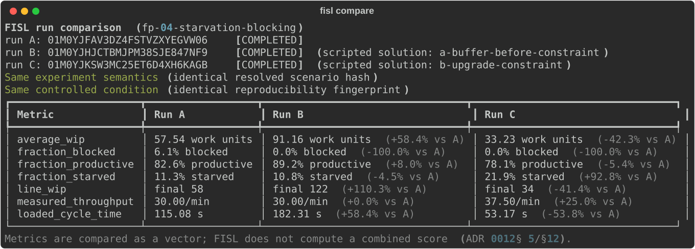

9 Lab 4 — Starvation and Blocking
Scenario: fp-04-starvation-blocking · runs of ~12 minutes each
The chest splice and the machine swap — Practice Range drills d3_chest_splice and d4_machine_swap.
In Lab 3 every machine had the same story: one bottleneck at the head of the line, one queue in front of it. This lab’s line is quieter and stranger: three machines of different speeds, and the slow one is hidden in the middle. You will diagnose which machine constrains the system without being told — using only what the machines’ behavior betrays — and then discover that the two obvious fixes are not the same fix at all.
9.1 The system
The same conveyor architecture as Lab 3, compressed: blue source chest, three machines (rough → machined → inspected → finished), orange sink chest. But look closer at the machines — they are not identical models this time. Their speeds differ, and speed times recipe determines each stage’s appetite:
| Stage | Machine | Recipe time | Seconds per workpiece |
|---|---|---|---|
| M1 (machining) | assembling-machine-3 | 2 s | 1.6 s |
| M2 (inspection) | assembling-machine-1 | 1 s | 2.0 s |
| M3 (finishing) | assembling-machine-2 | 1 s | 1.33 s |
The table is in front of you, so you know M2 is the constraint. A learner walking the factory floor doesn’t get this table — and that is the point of run 1: the machines will tell you anyway.
Three new numbers join WIP, throughput, and cycle time this lab — measured per machine and pooled across the line, over the measured window:
- productive fraction — share of machine-time with real craft progress (measured from progress, not from the status lamp);
- starved fraction — no progress, waiting for input;
- blocked fraction — no progress, output has nowhere to go.
There is deliberately no single “utilization” number, and there never will be: you always see which states are counted and against what denominator.
9.2 Run 1 — diagnose
Start the experiment, change nothing, and spend the run walking the line. The first minutes are calm — the mismatches take a few minutes to express themselves as full buffers. By mid-run, watch each machine for thirty seconds (Alt overlay on):
- M1: it runs, then halts with its output full, runs again. The short belt between M1 and M2 is packed solid. M1 is blocked — it could produce more, but downstream won’t accept it.
- M2: never stops. Input always waiting, output always drains.
- M3: it runs, then sits with an empty input for a beat, runs again. M3 is starved — it could produce more, but upstream won’t feed it.
That pattern is the diagnosis signature worth memorizing:
Blocked above, starved below — the constraint sits in between.
You just located a bottleneck without a stopwatch, a spec sheet, or a single measurement: coupled machines point at their constraint. After the run, fisl report runs/<run-id> turns your walking impressions into numbers — a per-machine table of productive/starved/blocked fractions and the pooled fractions. The reference baseline measured:
| Machine | productive | starved | blocked |
|---|---|---|---|
| M1 (fast, upstream) | 85.7% | 1.5% | 12.8% |
| M2 (the constraint) | 99.0% | 1.0% | — |
| M3 (fast, downstream) | 66.4% | 33.6% | — |
Check it against the rates: M3 needs only 1.33 of every 2.0 seconds to keep pace with M2 — so it must idle exactly ⅓ of the time, and it does, to the decimal. M1’s blocked share is a little under its ⅕ rate surplus because its own output buffer soaks up part of each stall. And the constraint never rests. The machines’ behavior is the spec sheet.
9.3 Run 2 — intervene, two ways
The toolbox holds both remedies. Choose one per run, and predict all three headline numbers before pressing Start.
Intervention A — a buffer. Splice a chest into the belt just upstream of M2: pick three belt tiles, replace them with inserter → wooden chest → inserter (all facing the flow direction). M1’s surplus now has somewhere to go.
Intervention B — attack the constraint. Replace M2’s slow machine with the fast assembling-machine-3 from the toolbox (mine the old one, drop the new one in its place, set the inspection recipe).
Then compare:
fisl compare runs/<baseline> runs/<intervention>What actually happens — reference runs of the committed solutions, against a baseline that measured TH 30.00/min, avg WIP 57.54, CT 115.08 s:
- A makes blocked time vanish (measured: 6.1% → 0.0% pooled) and lifts the pooled productive fraction to 89.2% — every machine looks healthier. Throughput does not move at all (30.00/min, +0.0%): M2 never stopped being the constraint, and a buffer feeds no one faster. The surplus M1 produces now accumulates in the chest for the entire run, so WIP climbs and climbs — average WIP 91.16 (+58.4%), and still rising when the experiment ended (final WIP 122 vs the baseline’s steady 58) — and cycle time with it: 182.31 s (+58.4%). Little’s Law is not optional. You improved every machine’s statistics and worsened every workpiece.
- B moves throughput — measured 37.50/min (+25.0%), exactly the next constraint’s rate (M1’s 1.6 s). Average WIP fell to 33.23 (−42.3%) and cycle time to 53.17 s (−53.8%) as the pre-constraint queue drained. And watch the state signature migrate: blocked time vanishes here too, but pooled starved time nearly doubles (11.3% → 21.9%) — M2 and M3 now wait on M1. Walk the line again: blocked-above/starved-below now points at M1. The method still works; the answer moved, because the constraint moved.
Now put the two pooled productive fractions side by side with throughput:
| pooled productive | throughput | |
|---|---|---|
| baseline | 82.6% | 30.00/min |
| A — buffer | 89.2% (best) | 30.00/min (no change) |
| B — upgrade | 78.1% (worst) | 37.50/min (best) |
Across these three runs the pooled productive fraction — the closest thing this lab has to a “utilization” score — ranks the interventions exactly backwards. The intervention that made machines busiest delivered nothing; the intervention that delivered the most made machines idle the most. This is why FISL refuses to print a bare utilization number: it is not that the quantity is unmeasurable, it is that maximizing it is not the objective, and a dashboard that headlines it teaches the wrong reflex.
9.4 Debrief
- Intervention A raised the pooled productive fraction. Is the system better? What single measured number settles it?
- A plant manager rewards each station for high productive time. Which intervention does that policy purchase? What does it do to inventory?
- After B, the constraint is M1. What is the next action this factory should take — and when should it stop upgrading machines? (Look at the source: admission is still uncontrolled. Lab 3’s pull gate and this lab’s constraint-hunting eventually meet.)
- In this deterministic world the buffer bought literally nothing but inventory. Real factories buy buffers on purpose. What are they paying for that this world lacks? (That question is the door to the entire variability course.)
9.5 What the simulation assumed away
No variability, no failures: rate mismatches here are constant and eternal, so any finite buffer before a slower machine fills and any buffer after it drains. Real systems’ buffers absorb fluctuation — they earn productive time back when machines fail or vary. What survives contact with reality unchanged: buffers never raise the sustained rate above the constraint’s rate, and inventory’s price stays denominated in flow time.

fisl solutions … --run --svg) — never hand-capture it.
- Reference interventions are committed as
scenarios/factory-physics/fp04-starvation-blocking/solutions/(a-buffer-before-constraint,b-upgrade-constraint); the full lab dataset — baseline plus both solutions, compared — regenerates withfisl solutions scenarios/factory-physics/fp04-starvation-blocking --run --json course/data/lab-04-comparison.json. Reference runs (2026-08-26): baseline01M0YHYH9TAVJP0SK6F60XX8W9(TH 30.00/min, avg WIP 57.54, CT 115.08 s — the rate arithmetic hit exactly), buffer01M0YJ0RNJCQZ7ZRSXVC75J1VR, upgrade01M0YJ304T2T1GQ8R2AFEPS62J(37.50/min, again exact). Pooled fractions (productive/starved/blocked): baseline 82.6/11.3/6.1, buffer 89.2/10.8/0.0, upgrade 78.1/21.9/0.0. Rerun the command after any scenario or baseline change and re-check the numbers cited in this chapter. - Machine-state fractions come from ADR 0007 classification: productive is measured craft progress, never the status lamp; unknown states surface as
unclassified/coverage rather than disappearing into idle. The per-machine table infisl reportshows eligibility windows — solution B’s machine swap is a live demonstration of dynamic entity-set membership (ADR 0016). - Steady state arrives only after the M1→M2 buffer fills (~3–4 min); the 4-minute warmup exists so the measured window starts stationary. If you shorten phases, re-check that.
- Learners who did Lab 3 will ask why the source-side queue is still allowed to pack. Correct instinct — tell them to bring their pull gate, then ask what it does to M1’s starved fraction (nothing, until the staging allowance is too tight — a lovely extension exercise).